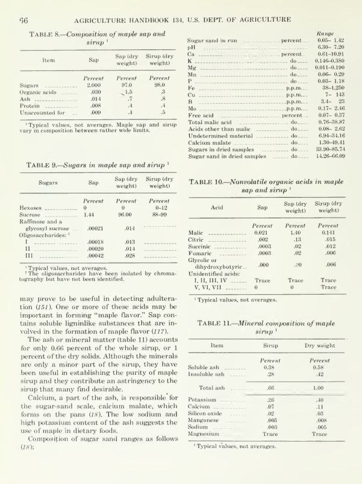

The completed document project
The original project used a 144-page scanned manual. The public sample contains selected text, editable tables, footnotes, a chart and photographs. AI-assisted transcription was followed by manual correction and visual review.
This Excel example extends that completed conversion: Python reads the reviewed Word table cells, and a workbook builder places five selected tables into separate sheets. The Excel export was checked cell by cell against the Word sample. Decimal spelling, ranges, blanks and labels such as “Trace” are retained as text.
Compare the source and extracted data
Original printed page 66 contains composition and sugar tables. Below is the composition table extracted from the reviewed Word version.

| Item | Sap | Sap (dry weight) | Sirup (dry weight) |
| Percent | Percent | Percent | |
| Sugars | 2.000 | 97.0 | 98.0 |
| Organic acids | .030 | 1.5 | .3 |
| Ash | .014 | .7 | .8 |
| Protein | .008 | .4 | .4 |
| Unaccounted for | .009 | .4 | .5 |
The workbook contains composition, sugars, sugar-sand composition, organic acids and minerals. Each sheet identifies its source document and table position.
Download the Excel example · Original scanned pages · Converted PDF · Reviewed Word sample
What this example establishes
This demonstrates scanned-document conversion, source-led review and extraction of reviewed tables into Excel. The Excel extraction starts from the reviewed Word document. This sample uses historical scientific tables, rather than Indeed application records. Dates and recruiting fields are not part of this example.
Source: C. O. Willits and Claude H. Hills, Maple Sirup Producers Manual, USDA Agriculture Handbook No. 134, revised July 1976. View the original conversion portfolio repository.